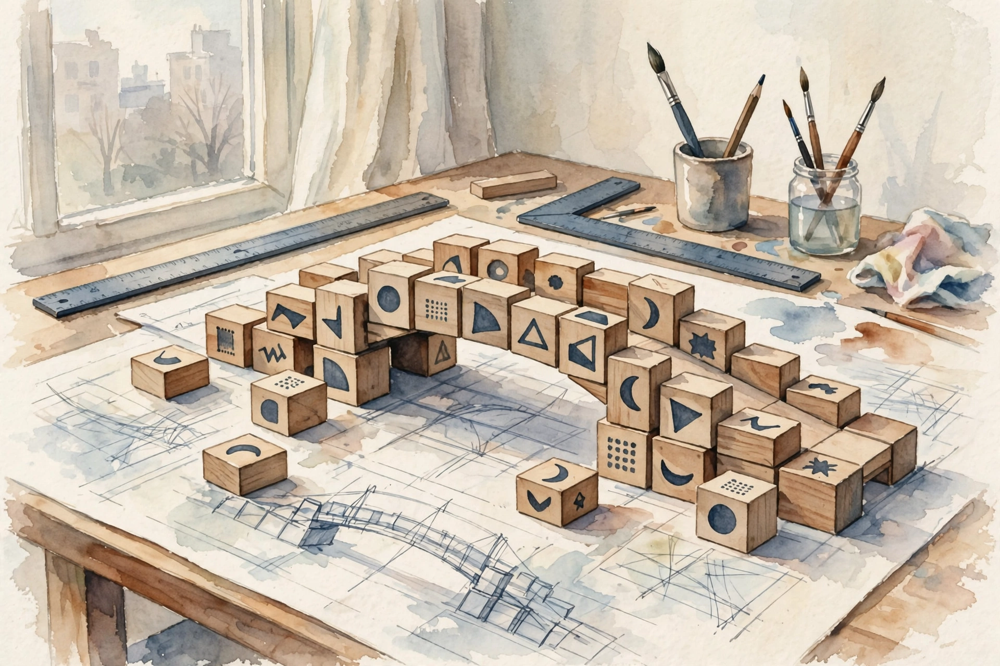
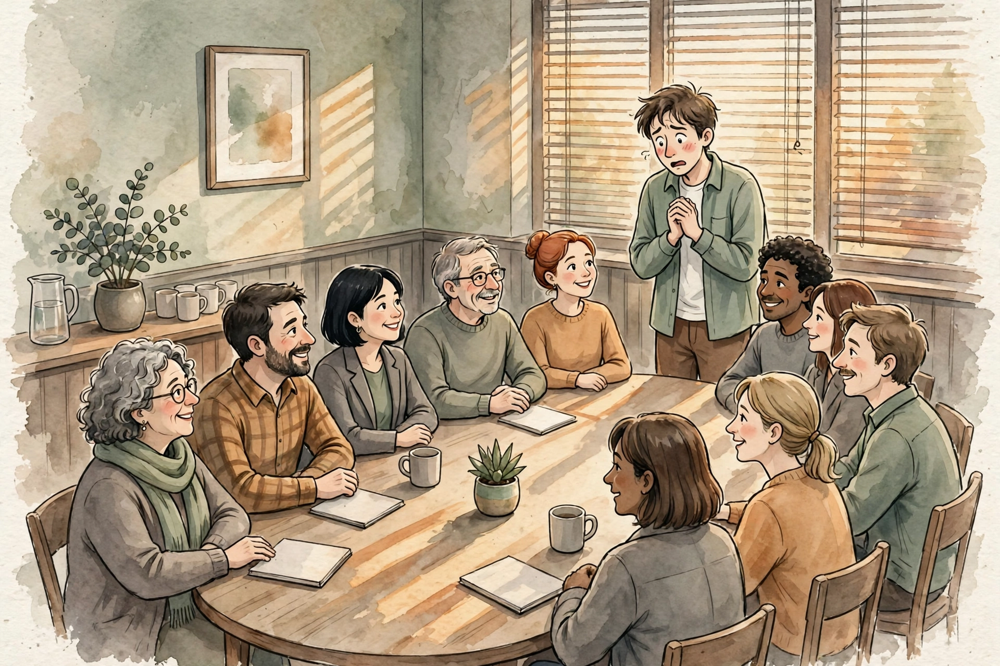

Huberman Lab · Episode Companion
Speak Clearly & With Confidence
Matt Abrahams teaches strategic communication at Stanford's Graduate School of Business and hosts Think Fast, Talk Smart. His core claim: clear speaking is a learnable skill, built from structure and practice, not talent or memorization. This companion follows the full episode, beat by beat.
Illustration. Structure turns panic into performance. AI-generated watercolor made for this page.
Watch. The official Huberman Lab episode video. Use the chapter menu above to move through this companion as you listen.
The Wisdom Index: every nugget in this companion
~00:01
Three Words From the Midwest
The episode opens with a small-talk masterclass from an unlikely teacher: Abrahams' mother-in-law. She had, in his words, a black belt in small talk. From the Midwest, she would come off the plane with three new best friends every visit. Her secret was three words: tell me more
.
The method behind it: lead with questions, then give the person space to say more once they answer. That draws reticent speakers out and reveals what matters to them, so you can latch on and go deeper. Reticent people do not need pressure. They need an invitation with room in it.
Nugget 1 · Conversation
Three words from the Midwest
What happened. A woman who made three best friends per flight did it with three words: tell me more
, said after every answer, with space to respond.
Why it matters. Most small talk dies because we interrogate instead of inviting. The three words convert an answer into a doorway.
The principle. Ask, then say tell me more, then be quiet.
~00:05
Status, Not Tigers
Why does speaking terrify people? It looks illogical until you hear the evolutionary story. When our species lived in groups of about 150, relative status meant everything, not the fancy car or the likes, but access to resources, food, shelter, reproduction. Anything that put your status at risk could be genuinely bad news.
Researchers believe this sensitivity is ingrained. We scan every speaking situation for status risk because, for most of human history, status risk was survival risk. The fear is not a glitch. It is an outdated alarm.
Nugget 2 · Roots
Status, not tigers
What happened. Speaking fear traces to ancestral groups of ~150, where losing status meant losing access to food, shelter, and mates. The alarm never got the memo that the stakes changed.
Why it matters. Naming the fear's origin shrinks it. You are not broken. You run on legacy code.
The principle. Thank the alarm for its service, then speak anyway. The tribe will not exile you for a pause.
~00:10
Be Wrong on Purpose
I'm not being wrong enough.
Abrahams' student, during the 15-second pointing exercise · Episode ~00:10
The exercise: for 15 seconds, point at objects and call them by the wrong name. Point at a car and call it a floor. Point at the floor and call it a calculator. It is very challenging, because your brain refuses to be wrong.
Abrahams watched a student point at a chair in total silence. Asked what was wrong, the student said he planned to call it a cat, but a cat has four legs and a chair has four legs, and sometimes a cat sits on a chair. He could not be wrong enough. There was no rubric, no requirements, and the inner critic still vetoed every answer.
We are all on this continuum
of judging and evaluating, Abrahams says. The student sat several standard deviations out, but everyone carries the internal judge, and it locks us inside ourselves instead of letting us be external.
Nugget 3 · Exercise
Be wrong on purpose
What happened. Fifteen seconds of deliberate wrongness reveals the inner critic: a student froze because calling a chair a cat was not wrong enough for him.
Why it matters. The critic edits before you speak. Training wrongness on purpose weakens the veto.
The principle. Point at your desk and call it a giraffe. Do it badly. That is the point.
Nugget 4 · Inner critic
The judgment continuum
What happened. Everyone sits somewhere on the continuum of self-judgment. The inner critic locks attention inward, blocking the external focus speaking requires.
Why it matters. Self-monitoring consumes the bandwidth your audience needs. Presence is attention pointed outward.
The principle. When the judge starts talking, redirect your eyes and ears to the room.
~00:30
Structure Is a Story

Illustration. Structure: a logical connection of ideas, like a story. AI-generated watercolor made for this page.
Abrahams defines structure as nothing more than a logical connection of ideas. It raises processing ability because brains are wired for story: beginning, middle, end. A random list is forgettable. A story is digestible.
His go-to frames: problem, solution, benefit (the television-ad frame), plus what, so what, now what, and past, present, future. He jokes with his students that bullets kill
: a slide full of bullet points helps no one, because structure is connection, not enumeration.
Three ready-made structures for any spontaneous answer
From the episode. Pick one before you open your mouth.
Source: Huberman Lab, Speak Clearly and With Confidence, ~00:30. Structures per Abrahams.
Nugget 5 · Craft
Structure is a story
What happened. Structure is a logical connection of ideas. Problem-solution-benefit and what-so what-now what give any spontaneous answer a beginning, middle, and end.
Why it matters. Lists evaporate. Stories stick. The audience cannot follow what has no connections.
The principle. Before you answer, pick a frame. Three boxes beat thirty bullets.
Nugget 6 · Slides
Bullets kill
What happened. Abrahams jokes that bullets kill
: dense bullet slides help neither speaker nor audience, because bullets enumerate instead of connecting.
Why it matters. Slides should carry structure, not text. The speaker is the story. The slide is the skeleton.
The principle. One idea per slide. Let your mouth do the listing.
~01:30
Road Map, Not Script
Where nervousness peaks
Per Abrahams: the worst of it is 30 seconds before and about a minute in. Schematic.
Source: Huberman Lab, Speak Clearly and With Confidence, ~01:30. Timing per Abrahams.
The peaks are knowable: about 30 seconds before you speak and about a minute in. That is the window to manage. But the management is not memorization. Abrahams is blunt about memorizing speeches: never.
The reason is cognitive load. Memorization creates a right way to say it, and you spend the whole speech comparing what you wanted to say with what you are actually saying. The comparison eats the bandwidth you need for the audience. What you want instead is a road map: structure, familiarity with the ideas, comfort with how you start. Know the route, not the script.
Nugget 7 · Preparation
Road map, not script
What happened. Memorizing burdens cognitive load: you compare the plan against the performance in real time. Abrahams recommends a road map instead, with a familiar opening. Nervousness peaks 30 seconds before and about a minute in.
Why it matters. A script breaks under pressure. A road map bends. The minute-one peak passes whether you fight it or not.
The principle. Memorize your first line. Structure the rest. Survive minute one.
~01:45
Listen Your Way Through the Table

Illustration. The go-around-the-table introduction: ten people, one turn, pure anticipation. AI-generated watercolor made for this page.
Huberman raises the most underrated terror: the small room, ten or fifteen or twenty people, and the words we will go around the table and introduce yourself. He wants to go first, because the anticipation ramps a circuit: hearing his own voice start, he feels awkward even though he has no trouble with public speaking and nobody notices.
His own fix is pure Abrahams doctrine: focus off himself and really listen to what people say. When the turn comes, just say your name. The attention was never the problem. The anticipation was.
Nugget 8 · Anticipation
Listen your way through the table
What happened. Go-around-the-table introductions terrify even confident speakers through anticipation, not performance. Huberman copes by listening hard to each speaker instead of rehearsing his own line.
Why it matters. Waiting is the hard part. Listening converts dead waiting time into presence.
The principle. Do not rehearse your intro. Collect everyone else's.
The episode in seven lines
- Say tell me more after every answer, then leave space. Three new best friends per flight.
- Speaking fear is status fear from ancestral groups of ~150. Legacy alarm, modern room.
- Practice being wrong on purpose: 15 seconds of wrong names loosens the inner critic.
- Structure is a logical connection of ideas. Pick one frame before you answer.
- Never memorize. A road map bends. A script breaks under cognitive load.
- Nervousness peaks 30 seconds before and about a minute in. Then it settles.
- At the table, listen instead of rehearsing. The anticipation is the enemy, not the turn.
Distilled from Huberman Lab, Speak Clearly and With Confidence with Matt Abrahams (~2h27m). Full episode: youtube.com/watch?v=ZtTUfMHuioA. The structures and exercises are Abrahams' from his Stanford GSB teaching. Timestamps marked ~ are proportional estimates from transcript position. They may be off by a few minutes.